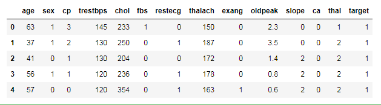
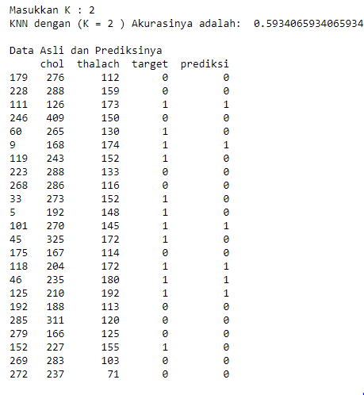

Studi Kasus
STUDI KASUS K-nearest_neighbors¶
bahan dan langkah-langkah;¶
siapkan tools: python, karna scriptnya memakasi bahasa pyhthon maka wajib makek python selanjutnya APP anakonda dan jupyter (app jupyter ada didalam anakonda), dan Libraries pandas dan siapkan file berintensi CSV atau data exel.
Konteks Basis data ini berisi 76 atribut, tetapi semua percobaan yang diterbitkan merujuk pada penggunaan 14 subset. Secara khusus, database Cleveland adalah satu-satunya yang telah digunakan oleh para peneliti ML hingga saat ini. Bidang "tujuan" mengacu pada adanya penyakit jantung pada pasien. Ini adalah bilangan bulat yang bernilai dari 0 (tidak ada kehadiran) hingga 4
Attribute Information:¶
- age
- sex
- chest pain type (4 values)
- resting blood pressure
- serum cholestoral in mg/dl
- fasting blood sugar > 120 mg/dl
- resting electrocardiographic results (values 0,1,2)
- maximum heart rate achieved
- exercise induced angina
- oldpeak = ST depression induced by exercise relative to rest
- the slope of the peak exercise ST segment
- number of major vessels (0-3) colored by flourosopy
- thal: 3 = normal; 6 = fixed defect; 7 = reversable defect
Langkah 1 : Import Libraries
install library pandas dan matplotlib.pyplot di CMD ADMINISTRATOR
pip install pandas
pip install matplotlib
pip install skelernPada kasus ini , saya akan menggunakan library pandas dan matplotlib.pyplot,sklearn;
import numpy as np
import pandas as pd
import matplotlib.pyplot as plt
import seaborn as sns
from sklearn.metrics import confusion_matrix
from sklearn.neighbors import KNeighborsClassifierfrom sklearn.model_selection import train_test_split
from sklearn.linear_model import LogisticRegressionMenginputkan data¶
data_orj=pd.read_csv("heart.csv")
data_orj.head()
Mengambil semua data untuk percobaan¶
data = data_orj.loc [:,'age':'target']Mengambil 3 kolom¶
data_knn = data[['chol','target','thalach']]Input jumlah K atau jumlah tetangga terdekat¶
inK = int(input("Masukkan K : "))Mencari knn dengan menggunakan sklearn neighbors clssifier¶
knn = KNeighborsClassifier(n_neighbors = inK)
x,y = data_knn.loc[:,data_knn.columns != 'target'], data_knn.loc[:,'target']
x_train,x_test,y_train,y_test = train_test_split(x,y,test_size = 0.3, random_state = 42)
knn.fit(x_train,y_train)
prediction = knn.predict(x_test)
print('KNN dengan (K =',inK,') Akurasinya adalah: ', knn.score(x_test,y_test))
print("")Tampilan akurasi dan prediksi data¶
datatest = pd.DataFrame(x_test)
datatest["target"] = y_test
datatest["prediksi"] = prediction
print ("Data Asli dan Prediksinya")
print (datatest)OUTPUT¶

SEKIAN¶
WASSALAMUALAIKUM